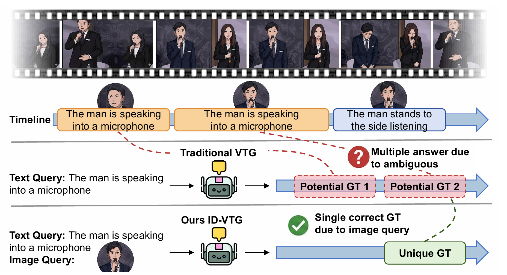
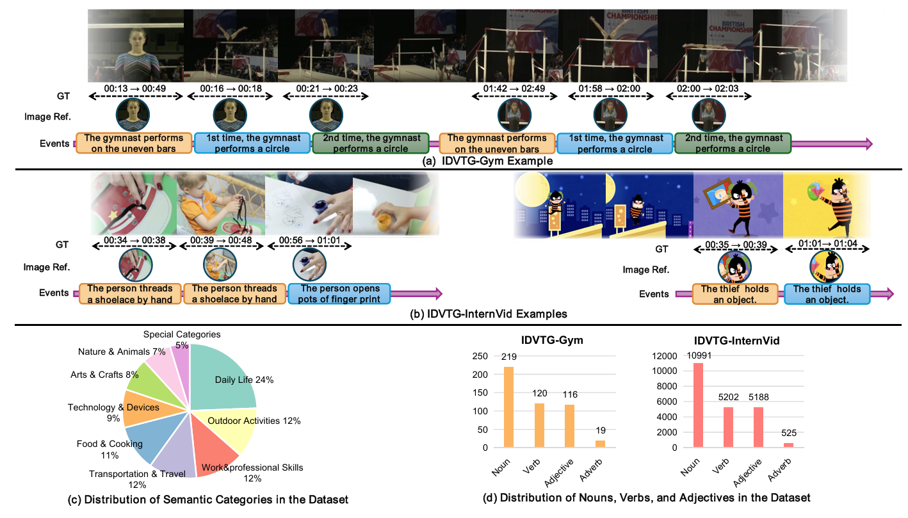
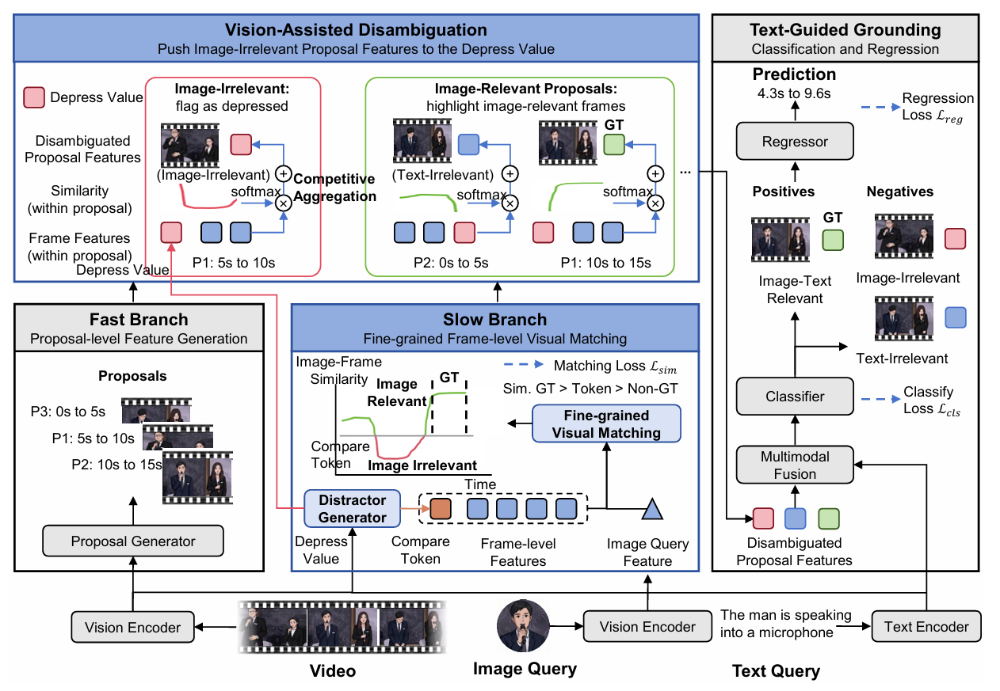
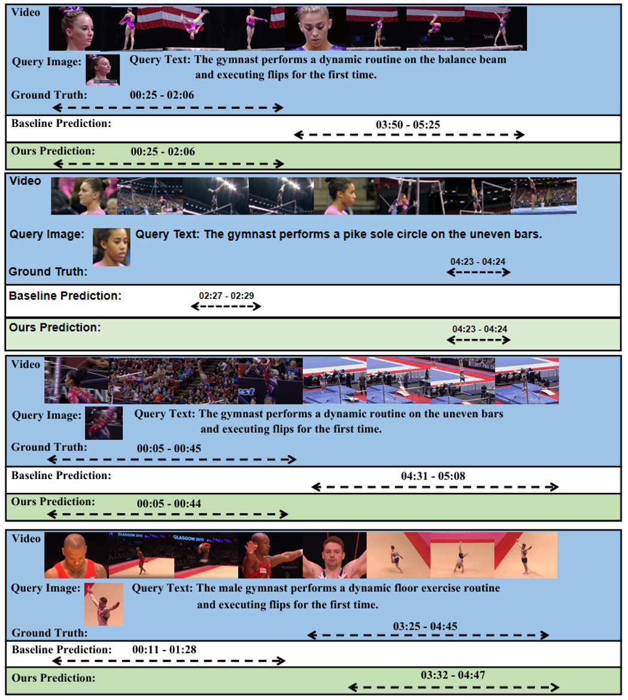
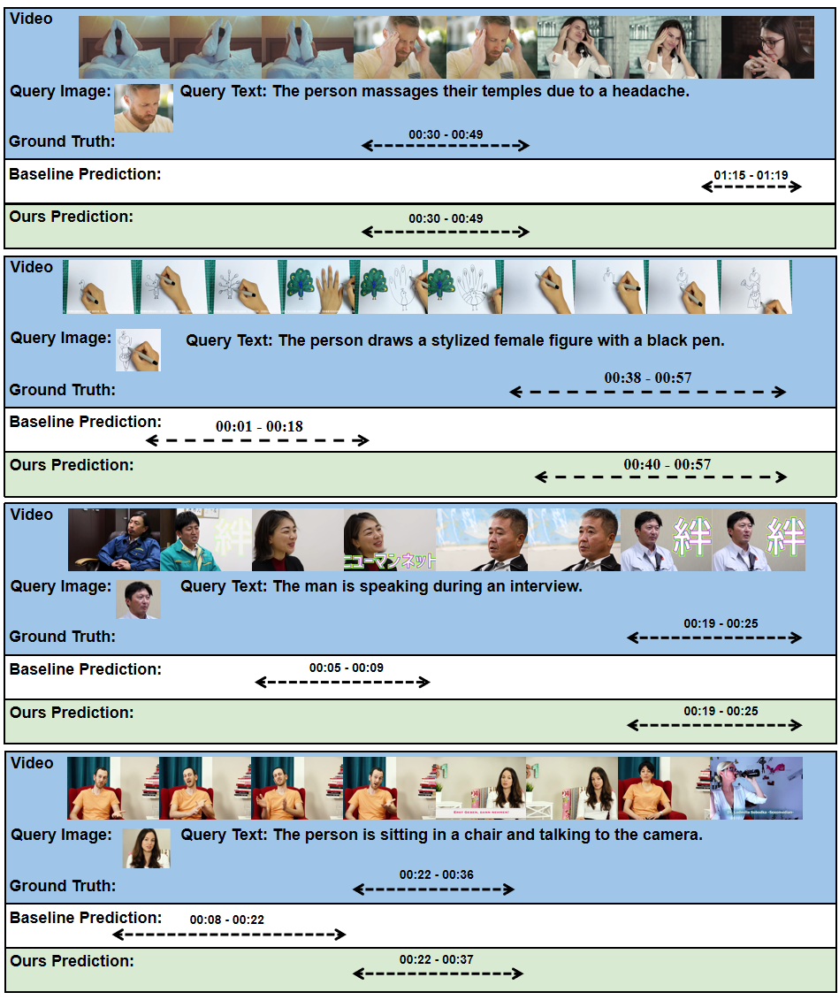

Video Temporal Grounding (VTG) faces significant challenges when natural language queries must distinguish between multiple events involving visually similar entities, particularly when relying on fine grained visual attributes that are difficult to describe accurately in words alone. To address this, we introduce Image-Disambiguated Video Temporal Grounding (ID-VTG), a task that leverages multi modal queries combining a reference image and a text description to precisely localize segments where a specific instance performs a described action. To facilitate research, we construct two bench marks, IDVTG-Gym, focusing on fine-grained, compositionally ordered gymnastics actions with athletes in similar uniforms; and IDVTG-InternVid, an open-world dataset featuring diverse entities (e.g., humans, animals, fictional characters) and significant temporal distractors. Methodologically, we propose the Visually Guided Disambiguation Aggregation (VGD-Agg) framework based on a dual-branch fast-slow architecture. The fast branch efficiently generates preliminary event proposals, while the slow branch performs fine-grained frame-level matching between video frames and the reference image. We enhance discriminability via two learnable tokens, a Compare Token, which represents hard negatives to probe for the presence of the target instance (as referred to by the query image), and a Depress Value, which represents text-irrelevant events. Proposals that the Compare Token identifies as lacking the target instance are pushed toward the Depress Value, thus easing disambiguation via the text query. Extensive experiments validate our approach, which achieves state-of the-art results on the proposed benchmarks. Code is available at https://github.com/oceanflowlab/ID-VTG.
Text-only temporal grounding cannot reliably select the intended event when multiple people or objects satisfy the same description. ID-VTG adds a reference image as an identity constraint: the text specifies what happens, while the image specifies who or what to follow.
“The man speaks into a microphone” may match several intervals and visually similar subjects.
Failure: semantic match without instance identity.
The image identifies the target instance; the text selects its requested action or ordinal occurrence.
Goal: precise temporal boundaries under hard distractors.

Figure 1. ID-VTG resolves ambiguous text queries by adding a visual reference for the target instance.
Given a video V and multimodal query Q = {Qtext, Qimg}, ID-VTG predicts Sg = (ts, te) that matches the text and contains the instance shown in the reference image. The benchmark includes text ambiguity (different instances, same action) and image ambiguity (same instance, different actions).

Figure 2. Dataset visualzations, semantic categories, and query statistics.
The figure above presents our two benchmarks: IDVTG-Gym is built from FineGym and covers holistic routines and atomic actions such as “giant circle”, with ordinal cues like “for the second time”. IDVTG-InternVid spans daily life, travel, cooking, technology, animals, objects, and fictional characters. The table below shows detailed statistics.
| Dataset | Domain | Duration | Queries | Query type | Ambiguity |
|---|---|---|---|---|---|
| TACoS | Cooking | 10.1 h | 18.2K | Text | No |
| Charades-STA | Activity | 57.1 h | 16.1K | Text | No |
| DiDeMo | Flickr | 88.7 h | 41.2K | Text | No |
| QVHighlights | Vlog / News | 425 h | 10.3K | Text | No |
| ActivityNet Captions | Activity | 487.6 h | 72.0K | Text | No |
| ICQ-Highlight | Vlog / News | 65 h | 6.19K | Text + Image | No |
| IDVTG-Gym (ours) | Gymnastics | 204.1 h | 14.7K | Text + Image | Yes |
| IDVTG-InternVid (ours) | Open-world | 302.7 h | 62.1K | Text + Image | Yes |
| ID-VTG (total) | -- | 506.8 h | 76.8K | Text + Image | Yes |
As shown below, VGD-Agg models long-range temporal context with the Fast Branch, performs frame-level matching with the reference image in the Slow Branch, and suppresses visual distractors using the Compare Token and Depress Value.

Figure 3. Overview of the dual-branch VGD-Agg framework.
VGD-Agg combines long-range temporal context with frame-level identity matching through a dual-branch fast-slow design.
Query-agnostic multi-scale proposals capture video-wide temporal structure efficiently.
Frame-level cross-modal matching compares each video frame with the reference image.
A video-specific hard-negative prototype; target frames score above it and distractors below it.
Represents text-irrelevant events and suppresses proposals that lack the target instance.
The Vision-Assisted Disambiguation module uses softmax competition between frame similarities and the Compare Token. It highlights image-relevant frames and suppresses distractors before text-guided classification and boundary regression.
| Method | R1@0.5 | R1@0.7 | mIoU |
|---|---|---|---|
| RaTSG | 18.45 | 15.99 | 16.96 |
| UVCOM | 18.07 | 15.00 | 17.32 |
| CG-DETR | 27.96 | 23.36 | 26.99 |
| ICQ | 46.12 | 42.24 | 40.24 |
| SnAG | 53.64 | 48.82 | 46.73 |
| VGD-Agg (ours) | 61.83 | 56.53 | 54.17 |
| Method | R1@0.5 | R1@0.7 | mIoU |
|---|---|---|---|
| RaTSG | 30.58 | 19.71 | 30.91 |
| UVCOM | 30.11 | 18.89 | 30.07 |
| CG-DETR | 44.81 | 31.62 | 43.80 |
| ICQ | 31.04 | 25.39 | 29.90 |
| SnAG | 44.26 | 35.46 | 41.70 |
| VGD-Agg (ours) | 51.21 | 41.24 | 48.30 |
VGD-Agg improves over SnAG by 7.44 mIoU on IDVTG-Gym and 6.60 mIoU on IDVTG-InternVid.
To illustrate how visual cues resolve ambiguity, we show qualitative results on both benchmarks below. The IDVTG-Gym example emphasizes identity discrimination among similarly dressed gymnasts, while the IDVTG-InternVid example demonstrates cross-entity and cross-scene localization in open-world videos.

Figure 4. Visual examples on IDVTG-Gym: the reference image helps select the correct gymnast and action occurrence.

Figure 5. Visual examples on IDVTG-InternVid: VGD-Agg suppresses temporally similar distractors and localizes the target instance.
@InProceedings{Zheng_2026_MM,
author = {Zheng, Minghang and Wei, Jingli and Yang, Hongyi and Liu, Yang},
title = {ID-VTG: Image-Disambiguated Video Temporal Grounding},
booktitle = {Proceedings of the 34th ACM International Conference on Multimedia},
year = {2026},
doi = {10.1145/3767308.3836517}
}